SPECDRUM by Neil Baldwin, Marmot Audio © 2023
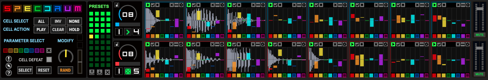
(Updated image for V1.10)
On the surface, SPECDRUM is a two-track sample-based drum machine. Go a little deeper and SPECDRUM is a randomly organic, self-catalysing sound engine. Or a slowly evolving texture generator. Or a polyrhythmic percussion section. Or a digital sprinkler that dusts your existing beats with Hundreds and Thousands.
SPECDRUM is driven by dual synchronised step sequencers, each with it’s own independent clock-divider and playback vector. Each sequencer cell uses an audio sample as its primary sound generation to which a set of playback parameters is applied. The intensity (and sometimes character) of each playback parameter is determined by either direct setting, randomly within a defined range or just simply random.
SPECDRUM is more than the sum of its parts but here’s its basic parts, for parts list lovers:
SPECDRUM Feature List
System Requirements
Installation
Loading and Saving Presets
Interface Overview
Quick Start Guide
Reference Manual
Reference: Playback Parameter
Sliders
Reference: Playback
Parameter Functions
Reference: Playback
Parameter Select Buttons
Reference: Cell Playback
Controls
Reference: Loading Samples
Reference: Cell Utility
Settings
Reference: Sequencer Controls
Reference: Macro Controls
Reference: Macro Controls - Cell
Operations
Reference: Macro Controls -
Playback Parameter Operations
Reference: Macro
Controls - Slider Modification Controls
Reference: MIDI Rationale
Reference: MIDI Controls and
Mapping
Preset System
Release History
SPECDRUM is a “Max For Live” device therefore you need an up-to-date working installation of Ableton Live, 10 or 11, and Max For Live (which comes packaged with Live 10/11 Suite these days).
You’ll need a mouse as the interface is mouse-input-heavy. A MIDI controller with knobs and such would also be fun for manipulation of certain controls.
The simplest and cleanest way to install SPECDRUM is by the following method:
You can then drag-and-drop SPECDRUM onto a Live track from the new Places folder.
Please note that directly adding Max For Live devices directly to your Live library is not recommended.
SPECDRUM can operate as a Max Audio device or a Max MIDI device or as an instrument inside and instrument rack. How you use it depends on whether you want to control it via MIDI or not. This assumes you are familiar with working with these kinds of devices and the advantages and limitaions of each. The discussion of each is beyond the scope of this document.
SPECDRUM has 3 stereo audio outputs. As well as the regular device output, 3/4 and 5/6 correspond to Track A and Track B so you can route individual tracks to different destinations within Live.
You can save SPECRDUM Live presets in the same way you would do for other Max For Live devices by using the Save icon in the top-right corner of the device window. Give it a new name (rather than overwrite the original) and save it to your Live library.
Saving will save all of the sequencer parameters, copy any new samples that you haven’t previously loaded (and saved) into SPECDRUM and also save a reference to each loaded sample. Note: If you move the source samples after saving there’s no guarantee that SPECDRUM will be able to find them again.
When reloading a saved preset, if it contains many samples it may take a couple of seconds after the devices is loaded to populate all of the sample cells.
It’s also possible since V1.10 to store Max For Live “presets” inside an instance of SPECDRUM that can be recalled on-the-fly via Max For Live’s Preset system.
Please see reference manual section Preset System for full details.
Apart from this manual I’ve created a Github repository specifically for submission and tracking of SPECDRUM issues:
💁 Holding your mouse pointer over any of SPECDRUM’s controls will show a little reminder of the control’s primary function. If you find them obtrusive, you can also turn the hints on/off by clicking the small toggle button with an arrow.
The SPECDRUM interface is split vertically into four main areas. From left-to-right they are: Macro Control, Preset System, Sequencer Control (one for each of the two 8-step sequencers) and Sequencer Cells.
| Macro Control Section | Functions |
|---|---|
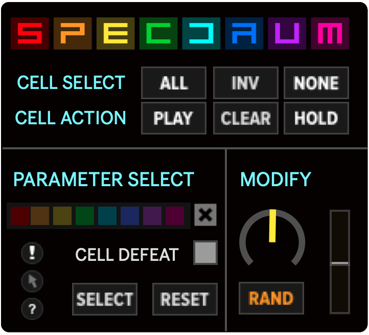 |
The Macro Control section is used to modify multiple Sequencer Cells simultaneously and is further split into two functions: Cell Operations and Parameter Operations. For more details see: Reference Manual: Macro Controls |
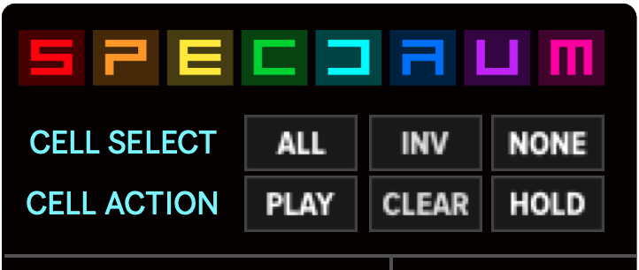 |
The upper section, Cell Operations, is concerned with the selection and modification of Sequencer Cells on a per-cell(s) basis. See: Reference Manual: Macro Control : Cell Operations |
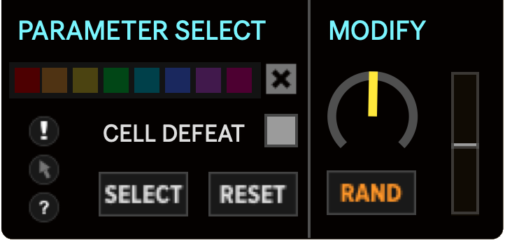 |
The lower section, Parameter Operations, is concerned with selecting and operating on individual Playback Parameters of the cells. See: Reference Manual: Playback Parameter Operations |
These three sections work hand-in-hand to enable you to focus your manipulation of the Sequencer Cells. Using a combination of cell operations and parameter operations you are able to focus your edits on as narrow or as broad a scope as needed.
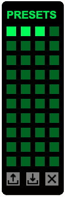
The Preset System section contains a 4 x 10 grid of preset slots for storing and recalling parameter snapshots on-the-fly and also controls to load, save and clear the currently loaded Preset collection.
Refer to the section Preset System for details.
The Sequencer Control section contains two
Sequencer Controls, one for each of the two tracks. The
two tracks, upper and lower, will be referred to as Track
A and Track B respectively.
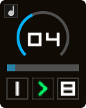
The upper section is the Sequencer Clock Divider which sets the amount of time taken to play one Sequencer Cell and is always based on the current Live tempo.
Underneath the Sequencer Clock Divider is the Sequencer Swing Control, below that is the Sequencer Vector Control. The Sequencer Vector Control has three controls, from left-to-right Start Step, Playback Mode and Sequence Length.
The Sequencer Clock Divider and Sequencer Vector Controls can be set independently for each track, though at all times both tracks remain in some mathematical relationship with each other and with the Live tempo.
Please see Sequencer Controls in the Reference Manual section of this document.
The long section of the interface on the right are the two horizontal tracks of Sequencer Cells.
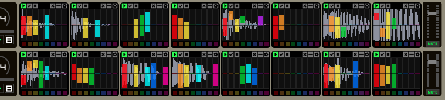
Each track is comprised of 8 cells, each containing a Cell Waveform that shows a representation of the currently loaded sample. Overlaid on the waveform display are the coloured Playback Parameter Sliders, coloured Playback Parameter Select buttons (small coloured squares beneath) and Cell Playback Controls along the top.
| Cell Waveform Display | Playback Parameter Sliders | Playback Parameter Select | Cell Playback Controls |
|---|---|---|---|
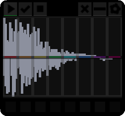 |
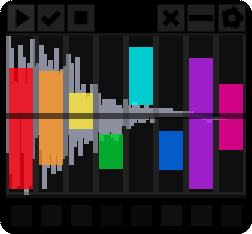 |
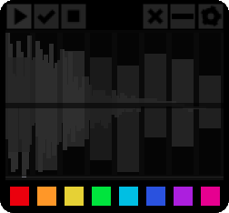 |
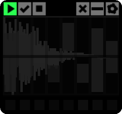 |
💁 There’s a lot to explore! While many features may be obvious there are some that won’t be until you understand the UI better. Please refer to Reference Manual section for details on each section and control.
Finally, on the right-hand-side of the UI, are audio output controls for each track. You can set the Track Output Fader and Track Mute Toggle for each track independently.
💁 While the Reference Manual section deals with the details of cell control, one thing to mention here, as it is technically the final aspect of the UI, is the Cell Utility Settings.
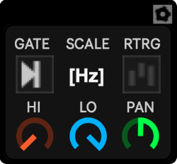
These settings are on the “back” of each cell and are accessed by clicking on the cog-wheel icon in the Cell Playback Controls tab at the top of each cell. Here you can set various playback settings that can’t be controlled by the Playback Parameter Sliders such as low and high pass filters and the pan position. Please refer to Reference Manual: Cell Utility Settings for more detail.
SPECDRUM is pretty deep and at times a bit abstract by design. This Quick Start section is intended to just get you up-and-running and to illustrate some core concepts. Once you’re comfortable with the basics the Reference Manual section goes into much finer detail about all of the controls.
If you’ve already got SPECDRUM loaded into an audio track then well done! If not, drag an instance of it into a free audio track. After a brief delay you will be presented with a SPECDRUM blank slate:
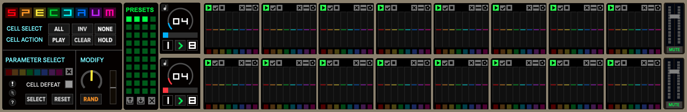
Hit Play on Live’s transport controls and you’ll see both sequencer tracks progress from left-to-right, the current step indicated by a coloured frame around the currently playing cell. Track A indicator is blue to match its Sequencer Control colours. Track B’s is red.
You can leave Live playing for the time being.
For simplicity we’re going to just concentrate on Track A (the top) of the sequencer and focus in on just the first cell. At the moment both tracks are playing from step 1 to step 8 in a loop.
To change the Playback Vector for Track A click-and-drag on the 8 digit in Track A’s Sequence Control section (that’s the smaller digit in the bottom-right). Set it to read 1 (both the start and length should then be 1)
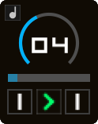
Track A now starts and ends on the first cell. You should now see that the blue-coloured frame will remain constant on the first cell. As we haven’t changed Track B it will still be looping around all eight steps. For the purpose of this quick start tutorial we’ll ignore it.
💁 Core Concept: Loading a Sample Into a Cell
To load a sample in SPECDRUM you drag-and-drop a file from your computer browser/folder/desktop onto the Sequencer Cells.
You can also drag in samples from Live’s built-in file browser.
There are also a few special functions to load a sample into multiple cells or load multiple samples. See Reference: Loading Samples for details.
Shrink the Live interface enough so you can open a folder on your computer. Obviously there needs to be some samples in the folder. Drag-and-drop a sample onto the first cell of Track A. For ease of this tutorial choose something like a single drum hit.
| Hold over cell until it’s highlighted | Cell display showing sample |
|---|---|
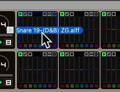 |
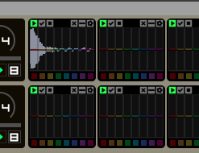 |
💁 As you hover over a cell you’ll see a coloured outline (this is Max feedback to indicate that it is a valid file. SPECDRUM will play most stuff but it won’t let you load a PDF or a spreadsheet.)
Drop the file and two things will happen. Firstly the cell display will change to show a representation of the sample you just loaded. Secondly (as long as you left Live playing as I suggested) you should hear it playing. Repeatedly. This is good!
💁 Sample Types
At the point of release, SPECDRUM treats all samples as mono internally. You can load stereo samples but the output will be summed to mono. This was done to save processing load. The efficiency of the internal sample engine is top priority for further development which should then make some overhead for stereo processing. The output stage is pseudo-stereo as you can set and modulate the pan position of any cell’s output.
With Live still running and the sample you loaded still annoying you, click and drag on the 04 in the middle of the Sequencer Control for Track A.
You’ll notice as you drag up and down, by default the number changes in
“musical” steps: 1, 2, 3, 4, 6, 8, 12 and so on. This is so that you can
quickly dial in some of the more commonly used time relationships. You
can change this behaviour so that an unconventional step time
can be set. More on this in the Reference Manual: Sequencer
Control section.
Now click and drag on the right-hand 1 that you changed earlier. This time drag upwards and set it to 2. This sets the sequence length on Track A to two steps. Obviously as SPECDRUM plays the second cell there is no sound. You know what to do to load a different sample into the second cell.
| Hold over cell until it’s highlighted | Cell display showing sample |
|---|---|
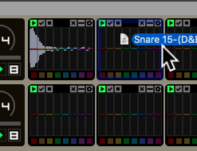 |
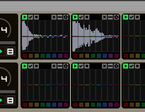 |
You should now hear both samples played sequentially (providing Live is still playing).
The two remaining controls we have yet to look at in the Sequencer Control section are Sequencer Playback Mode and Sequencer Swing.
Clicking and dragging the Sequencer Playback Mode icon will change the playback between forward, reverse, ping-pong, oscillating and random. The difference between the modes might not be so obvious with just two cells on a single track. You can read more about SPECDRUM’s play modes here: Sequencer Playback Mode
Sequencer Swing is controlled by the horizontal slider. At its left-most position there will be no “swing” applied to the playback. Slide this towards the right to increase the swing amount. You should hear that the second step is delayed the more you move the Swing control to the right.
Now we’ve got the basic operation out of the way let’s take a very brief look at the Playback Parameter Sliders. There’s full explanation of each slider’s function in the Reference Manual section.
For each Playback Parameter Slider, the default positional is vertically centered (you can just see a small coloured line across the center of each one).
With the marker in the center, the sample is played at its original pitch. Above the line it is played at a higher pitch, below the line it is played lower pitch (how the pitch relates to the slider is set in the cell’s utility settings, see the section Reference Manual: Cell Utility Settings
While Live is still playing, move your mouse over the left-hand slider in the first cell. The first slider (coloured red) controls the playback pitch of the sample in the cell.
Single-click in the Pitch slider of the first cell somewhere between the center and the top of the cell.
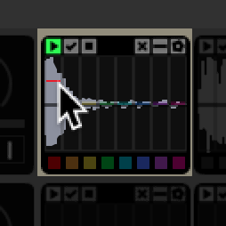
You should hear the sample play higher in pitch. Click below the center and you’ll hear the sample at a lower pitch. You’ll also breifly see a coloured helper overlay that shows the current values of the slider (in the format LOW:HIGH). This is to help with situations where you need a more precise idea of the value you’re setting.
This time, use the mouse to click-and-drag above the center line of the Pitch fader to create a small rectangle.
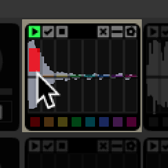
For this particular Playback Parameter, the size of the rectangle determines a random range for the pitch. You’ll hear that each time the cell plays you’ll get a variation in the pitch. Again, the little helper overlay will appear for as long as you’re click-dragging. It will disappear when you stop dragging.
💁 Core Concept: Setting Slider Values
In SPECDRUM there are two ways to manually set values: Single-Click sets a fixed value while Click-and-Drag sets a random range.
As we dragged the rectangle in the upper half of the slider you’ll only get random pitches higher than the original. You can of course drag the range rectangle lower to span the center line, then you’ll then get random pitches higher and lower than the original.
Further Reading: Max Documentation
The sliders used for Playback Parameters are Maxrsliderobjects. There are various modifier keys that you can use with mouse input to manipulate them in different ways. Knowing the modifier keys will help you get the best out of SPECDRUM’s interface. The keys are specific to Mac/Win and are detailed here: Modifier Keys When Setting Values and you can also check the official Max documentation for up-to-date knowledge: Max: Rslider Reference
At this point I’m sure you’ve been more than tempted to click and drag inside the other Playback Parameter faders. You’ll probably grasp the function of most while some others will probably leave you scratching your head. The function of each one is detailed in the Reference Manual section.
One other thing we haven’t touched on yet are the icons in the top tab of each cell. These are the Cell Playback Controls.
I won’t detail all of them here but two that are topical at this time
are the second and third from the right. The - icon resets the Playback Parameter
Sliders in the cell. The X is for
removing the sample from the cell. You can probably work out some of the
others but they are detailed in the section Reference Manual: Cell Playback
Controls
It was difficult to know how to approach this section: do you start at a higher level and work down or start at a lower level and work upwards/outwards? I figured, as the Playback Parameter Sliders are the heart of SPECDRUM, it would be best to start there first. You can, of course, jump to the sub-sections on Macro Control and Sequencer Control if you need to know how that stuff works first instead.
Each cell contains eight Playback Parameter Sliders, each one coloured differently. These sliders are used to set single fixed values or define a range which will be used to generate a random value. These values are then applied to their related aspect of the sample playback or modulation each time the cell is triggered by the sequencer.
| Playback Parameter Slider Colours | |
|---|---|
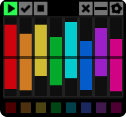 |
Red: Sample Playback
Speed/Pitch Orange: Amplitude Modulation and Overdrive Yellow: Dual-state LPF/HPF Filter Green: AD (Attack-Decay) Amplitude Envelope Cyan: Gain and Pan Blue: Sample Offset, Direction & Loop Purple: Retriggering & Probability Magenta: Cell Self-Modulation |
There are two methods to setting values in the Playback Parameter Sliders (single click or click-and-drag) but also where you click affects the function of the slider. The next section deals with the function of each slider and uses the following terms to describe the different ways of setting values in them:
| Setting Action | Function |
|---|---|
| Single Value | the function when you set a value with a single click |
| Range | the function when you set a range by click-and-drag |
| Upper | the function when the single value or range is in the upper half of the slider |
| Lower | the function when the single value or range is in the lower half of the slider |
| Span | applies only to range, the function when the range spans the upper and lower halves of the slider |
There are several modifier keys that you can use in conjunction with mouse clicking and dragging to change the slider range in different ways:
| Function | MACINTOSH | WINDOWS |
|---|---|---|
| Extend range instead of replacing it | SHIFT + Click | SHIFT + Click |
| Shift range | CMD + Click | CTRL + Double-click |
| Expand or shrink range | OPT + Click | ALT + Click |
| Select entire range | CMD + Double-click | CTRL + Double-click |
Note: some of these may not work. I think it depends on what other system modifier keys you have active on your system so where there’s a clash it won’t work in a Max device. How you resolve that for your own system is outside the scope of this documentation.
As you click-and-drag sliders you’ll see a small two-integer overlay appear in the cell. It shows the current range set in the slider you’re moving in the format LOW:HIGH. It will stay on-screen as long as you are dragging the mouse (while holding the mouse button) and then fades off after you stop dragging. This is to help in situations where you need to set a more precise value in the slider.
The red slider sets the playback pitch/speed of the sample. It’s just a simple rate change, the samples are not time-stretched.
| Single Value | Range | |
|---|---|---|
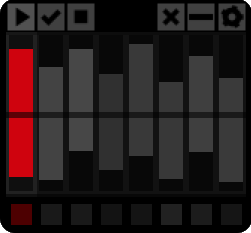 |
Upper: will play the
sample faster than the original speed. The speed depends on the distance
from the center. Lower: will play the sample slower than the original speed. |
Upper: set a random
faster playback speed within the range. Lower: set a random slower playback speed within the range. Span: set a random playback speed, faster or slower, within the range. |
💁 The Pitch slider works in conjunction with the Scale setting in the Cell Utility View which can be accessed via the small cog icon on the left of the Cell Playback Controls. See Cell Utility View in the Reference Section.
Setting a Span in the Pitch slider works differently depending on the Scale Mode you have set in the Cell Utility Settings view. If you have a scale selected the range defines the range of notes within that scale, using the lower part of the range as the root note, from which a random note will be selected.
The orange slider applies amplitude modulation and/or overdrive to the output of the cell. This is the first of the dual-function sliders where the upper and lower halves of the slider control different but related parameters.
| Single Value | Range | |
|---|---|---|
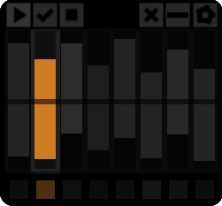 |
Upper: will apply
Amplitude Modulation to the cell output. The frequency of the modulation
goes from 40hz (just above middle) to 1000hz (top). Lower: applies Overdrive to the cell output. This uses the stock overdrive~ Max object. The lower the setting
(below the center line) the higher Drive Value. |
Upper: a random Amplitude
Modulation pitch is applied each time the cell is played. Lower: a random Overdrive drive amount is applied. Span: set a random Amplitude Modulation pitch and an Overdrive drive amount. |
💁 With Parameter Sliders that have two separate functions in the upper and lower halves, it’s not really possible to have a random range for the upper and a fixed value for the lower function (or vice versa). This is a small limitation of the design. This applies to a couple of the other faders too.
The yellow slider applies a resonant low-pass or high-pass filter to the cell output signal.
| Single Value | Range | |
|---|---|---|
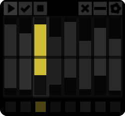 |
Upper: applies a resonant
HPF. The cutoff requency gets higher the higher up the slider you
click. Lower: applies a LPF. The cutoff frequency gets lower the further down the slider. |
Upper: applies the HPF
mode and sets a random cutoff Frequency. Lower: applies the LPF and sets a random cutoff Frequency. Span: applies either the HPF or the LPF and sets a random cutoff Frequency. |
💁 As well as the Dual-State filter here, on the Cell Utility View (accessed by the cog icon), there are two additional filters that are positioned at the end of the signal path for each cell. These are more like fixed band EQs, used for filtering out high or low frequency content. See section Cell Utility View for more detail.
💁 The Attack-Decay envelope also is applied to the filter cutoff if you have anything other than the default center position set in the Attack-Decay slider.
The green slider applies a simple two-stage amplitude slope to the cell output signal.
| Single Value | Range | |
|---|---|---|
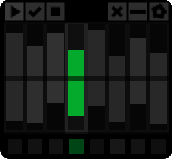 |
Upper: sets an Attack
value for the amplitude ramp. Shorter times near the middle, longer
times near the top. Lower: sets a Decay value for the amplitude ramp. Longer times near the middle, shorter times near the bottom. |
Upper: applies an Attack
ramp to the signal and sets a random time for the ramp. Lower: applies a Decay ramp to the signal and sets a random time for the ramp. Span: applies Attack and Decay ramps to the signal and sets a separate random time for both functions. |
💁 The Attack-Decay envelope also is applied to the filter cutoff if you have anything other than the default center position set in the Attack-Decay slider.
The cyan slider controls the overall level and pan position of the cell output. You set the base pan position via the Cell Utility Settings - the modulation via this slider is based on that setting.
| Single Value | Range | |
|---|---|---|
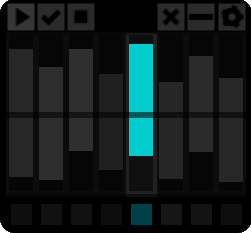 |
Upper: causes the pan
position to be modified each time the cell is played. The further away
from the center the more extreme the position shift. Lower: sets an output gain offset. The further from the center, the quiter the output. |
Upper: causes the pan
position to be modified each time the cell is played. The further away
from the center the more extreme the position shift. Lower: applies a random gain offset each time the cell is played. Span: applies both a random pan position and a random output gain offset each time the cell is played. |
💁 Gain should really be named attenuation as it only decreases the output from the original sample amplitude. The name Gain is a hangover from early prototypes where you could increase the amplitude on this slider. That may make its way back in at some point so I’m leaving it as Gain for now.
The blue slider controls sample offset and looping function and gives you the abilitty to play the sample forwards or backwards.
| Single Value | Range | |
|---|---|---|
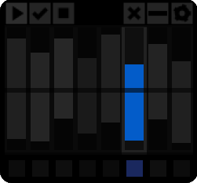 |
Upper: plays the sample
forwards, without looping, the start point of the sample being
represented by the distance of the value from the slider
center. Lower: plays the sample backwards, without looping, the start point of the sample being represented by the distance from the slider center. When playing in reverse, the start offset is an offset from the end of the sample. |
Upper: plays the sample
in a forwards loop, the size of the loop determined by the size of the
range. Lower: plays the sample in a reverse loop, the size of the loop determined by the size of the range. Span: plays the sample in a loop with a 50:50 chance of it playing forwards or backwards. The size of the forward loop is determined by the distance from the center of the slider to the top of the range. The size of the reverse loop is determined by the distance from the center of the slider to the bottom of the range. |
The purple slider controls the probability of the sample playing and also controls retriggering of the sample within the duration of the cell.
| Single Value | Range | |
|---|---|---|
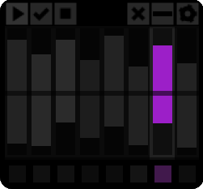 |
Upper: sets a probability
for the cell sample to be played. The further away from the center, the
less likely it will play. Lower: Lower: sets a speed for the sample to be repeated during it’s cell duration. The further from the center, the slower the repeat. |
Upper: sets a probability
for the sample to be played. The further the upper part of the range is
away from the center, the less likely it will play. Lower: sets a speed for the sample to be repeated during the cell’s duration. The further from the center the lower limit of the range, the slower the repeat speed. Span: the sample is always played and whether or not it is retriggered is determined by the distance of the upper range limit from the center. The speed of the retriggering is determined by the distance of the lower range limit from the center. |
💁 Internally the retriggering speed uses Max’s musical duration notation so that they’re related to Live’s tempo. Fastest to slowest: 64n, 32nt, 32n, 16nt, 32nd, 16n, 8nt, 16nd, 8n, 4nt, 8nd, 4n, 2nt, 2n where n =note, nt =triplet note and nd =dotted note.
The final slider, coloured magenta, controls Self Modulation for each cell. This slider also depends on a part of the cell UI that we haven’t touched on yet: Playback Parameter Select toggles (see below the function table for a fuller explanation of what’s going on here)
| Single Value | Range | |
|---|---|---|
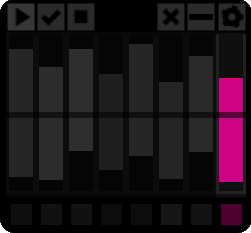 |
Upper: sends a single
random value to upper half of any other slider that has
its Playback Parameter Select set. The distance from
the center determines the maximum for the random value, the minimum is
the center of the target slider. Lower: sends a single random value to lower half of any other slider that has its Playback Parameter Select set. The distance from the center determines the minimum for the random value, the maximum is the center of the target slider. |
Range (upper/lower/span): sends a random range to any other slider that has its Playback Parameter Select set. The size and position of the range in the target slider won’t exceed the range set here. |
The eight coloured square toggles at the base of a cell correspond to the slider of the same colour. Turning them on signifies to SPECDRUM that you wish to select them as a target for a manual or automated operation. This applies to functions both within the cell itself and also when manipulating the cell slider settings via the Macro Control section.
In order to make the Self Modulation slider actually do anything you have to turn on one or more of the Playback Parameter Select toggles.
💁 It’s not possible to self-modulate the Self Modulation slider even though you can toggle its Playback Modulation Toggle. The ability to set its toggle is for use in the “Macro Control Section”macro-control-section controls and also when clearing the cell sliders via the Cell Playback Controls
💁 There’s a hidden function of the Playback Parameter Select toggles. It’s possible to use your mouse to double-click a toggle which will reset the respective Parameter Slider.
Each cell has a set of icons in the area above the sliders. These are the Cell Playback Controls. They can be operated manually, by clicking on them with the mouse, and also can be interacted with via the Macro Control Section where you can perform functions on multiple or all of the cells simultaneously.
| Cell Play: used to determine if the sample is
played when the sequencer reaches the cell. This is green when play is
enabled and grey when not. Disabling Cell Play also stops the Self Modulation fader from sending any values to its Cell’s sliders. You’re still able to use the Macro Control controls to manipulate any cell’s sliders though, regardless of its Play Enable status. 💁 There’s a hidden feature of the Cell Play control. If you hold your mouse pointer over it, the full path of the currently loaded sample will be displayed. |
|
| Cell Select: this is used to select the cell for
operations performed by the Macro Control section. As
well as manually selecting individual cells, multiple cells can be
selected from the Macro Control section. 💁 There are special functions for Cell Select when dragging samples into cells. See Loading Samples for more detail. 💁 There is also a special function for Cell Select to enable changing Cell Utility Settings simultaneously in multiple cells. See Cell Utility Settings for more detail. |
|
| Cell Hold: used to hold/freeze the cell.
When enabled, any ranges that are set in the sliders or any other
modulation that targets the sliders (either from the Macro
Controls or Self Modulation Slider) will be ignored and
the sample will be played using whatever parameter values it held before
Cell Hold was engaged. 💁 If you send any new values from Macro Controls, while Cell Hold is active in any cells you target, the sliders may change appearance but no audio changes will be heard until you turn off Cell Hold. |
|
| Cell Clear Sample: removes the currently loaded sample from the Cell. Undo is limited so use with care! All other parameters in the Cell are unaffected. | |
| Cell Reset Parameters: clicking this will reset any
Parameter Sliders that have their Playback Parameter Select toggle
on. 💁 Please note that if none of the Playback Parameter Select toggles are turned on, Cell Reset will reset ALL Parameter Sliders. This is intentional, providing a shortcut to reset all sliders without having to first select them all. |
|
| Cell Utility View: clicking on this icon will
reveal the Cell Utility
View The Cell Utility View has an identical icon that
will return you to the regular view of the cell. See the next section
Cell Utility Setting for details on
this. 💁 Even if the cell has the Cell Utility View active it will still function normally, including the ability to drop samples onto it. |
To load samples in SPECDRUM you need to drag-and-drop them onto the Sequencer Cells. You can drag them from a computer folder (Desktop, Documents etc.) and also drag them from Live’s built-in file browser. SPECDRUM will handle most typical file formats.
💁 There are issues when trying to drag samples into multiple cells from within Live’s file browser when the samples are contained within a Live Pack. I’ve not figured out what the cause is yet so for now either stick to samples that you’ve explicity imported into Live (not inside a Live Pack) or just drag them from your computer file system.
The Cell Select toggle on each Sample Cell has special functions for loading samples into multiple cells and loading multiple samples.
It’s possible to load a single sample into multiple cells. To do this, first turn on the Cell Select control for each of the cells you’d like to load the sample into then drop the sample onto any of those selected cells. This works on a track basis i.e. dropping a sample onto selected cells in Track A won’t load that sample onto any cells in Track B (and vice versa).
In a similar way to loading a single sample to multiple cells, it’s also possible to load multiple samples into multiple cells. First select the cells you want to load samples into via the Cell Select control, then with multiple samples selected, drop them onto any of the selected cells. This works on a track basis i.e any samples you drop into Track A won’t be loaded into any cells on Track B (and vice versa).
A couple of conditions apply:
We’ve covered this one before briefly. Clicking on the cog icon will reveal the back of the cell where there are a few utility controls:
💁 Cell Utility Settings and the Cell Select Toggle
It’s possible to change utility settings in multiple cells simultaneously by using the Cell Select toggle.
To change settings in multple cells first enable Cell Select (yellow tick icon) in the cells you want to change: note that this includes the cell that you want to use as the master control. Then change the Utility settings of any one of the selected cells and the changes will be reflected in all the other selected cells. This operates on a per-track basis so modifying selected cells in Track A will not affect any cells, selected or not, on Track B.
This is used to toggle between two different playback modes for each cell. The default mode is Gate (>|) which only plays the sample for the duration of the cell (or until the sample ends naturally) and a Note Off command is sent by the sequencer to the current cell just before next cell is played. This effectively makes each track operate in a monophonic way. Clicking on this control toggles between Gate and Trigger. In Trigger mode (>) a Note Off command isn’t sent to the cell so that any long samples will continue to play overlapping the next cell. Any samples that play past the end of the next cell will naturally be cut off next time the same cell is played.
💁 In some circumstances, if your Sequencer Playback Mode is set to Random, you could get a temporarily stuck sample using the Trigger mode. This isn’t so much of an issue using the other Playback Modes, as any samples that have not been stopped will naturally be stopped the next time its cell is triggered. However when using the Random play mode, conceivably, if the sample is long, it could be stuck for an unpredictable amount of time. This can also happen if you’ve employed any looping with the blue Offset and Looping slider and there is no Decay set on the cell via the green AD Envelope slider. If the sample loops and the Cell Gate Mode is set to Trigger, the sample will continue looping until it’s interrupted by the cell being triggered again by the sequencer.
Click the box beneath ‘SCALE’ to select a fixed scale to apply to the Pitch/Speed Slider output. The default setting is ‘[Hz]’ which signifies that no scale is applied. For any other setting the three-letter abbreviation corresponds to the following scales:
| Chr - chromatic | Dor - dorian | Slc - super locrian | MiP - minor pentatonic |
| Maj - major | Phr - phrygian | MjB - major blues | Gyp - gypsy |
| Min - minor | Lyd - lydian | MiB - minor blues | Chi - chinese |
| Hmi - harmonic minor | Mly - mixolydian | Dim - diminished | Plg - pelog |
| Mmi - melodic minor | Loc - locrian | MjP - major pentatonic | Iwa - iwato |
💁 The playback pitch behaves a little differently depending if you have a scale applied.
No scale [Hz]: the original playback speed of the sample is at the center of the Pitch/Speed slider (red). Moving the slider up increases the pitch/speed, moving it down decreases the pitch/speed. You can change the pitch by approximately a factor of 3 either way.
Scale: the center of the slider is double the original playback speed. I did this to give you more higher pitches than lower pitches as the lower pitches quickly become useless after about two octaves down.
In Scale mode, the lower part of the slider range then becomes the root of the scale and the scale is applied upwards from that point. If you have a tuned sample at C, for example, and wish to play random notes from a D Minor scale, first put the scale into Chromatic mode (Chr) and use the slider to set a single value until the cell is playing a D. Now hold shift and click-drag upwards from that point to define the range and switch the scale to Minor (Min). It’s important to remember the scale works upwards. If you move the whole range lower from this point, whatever note is denoted by the new lower end of the slider range will be the root of the scale so you’ll no longer be getting notes from the D Minor scale (unless by chance you managed to make the lower part of the range land on D!). If you want to set a new root just repeat the process of defining a single-value range, switching to Chromatic, setting the root note with the slider and then expanding the range updwards to get random pitches in that scale. You can of course move the upper part of the scale and it will stay in D Minor (as long as you don’t move it below the lower limit of the range!)
Sounds more complicated than it is in practice!
RTRG stands for Retrigger and enables a sort of experimental mode for the retriggering function as controlled by the Probability and Retrigger slider.
Ordinarily, with this feature turned off, the generation of new random values for Parameter Sliders ranges only happens when the sequencer triggers the cell. With RTRG turned on, when a cell has Retriggering enabled (via the pink slider), each time the cell retriggers it’s sample a new random value will be genereated from any Parameter Slider ranges but only for any sliders that have their Parameter Select toggle on.
It’s a bit of a weird one that can generate some really unique sounds, especially targetting the Dual Filter and the Offset and Looping sliders.
These control the cutoff frequency for a high pass and low pass filter added to the end of the signal chain of each cell. These can’t be modulated and are there just to roll off any problematic low or high frequencies at the output of each cell.
Sets the base pan position for the output of the cell. Like the low and high pass filters, this can’t be modulated however the final panning position of the cell output is determined by adding together this value to the value determined by the Gain and Pan slider.
Returns you to the normal cell view. Note: while the Cell Utility View is active the cell will still function as expected, including the ability to drop samples onto it.
Each track of SPECDRUM is driven by its own step sequencer. Its behaviour is controlled by each tracks’s Sequencer Control
💁 Clock
The sequencers get their clock information from Live’s transport and so will react to, and stay in sync with, Live’s global tempo.
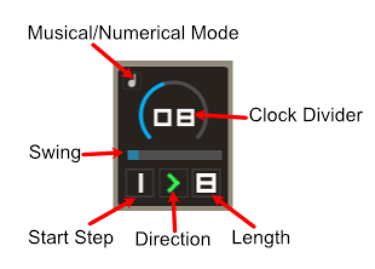
This represents how the clock for the sequencers is derived from Live’s tempo. It determines by how much 1 bar is divided by to get the length of one step in SPECDRUM’s sequencers.
The Clock Divider has two different modes, musical and numerical. Both do the same thing, divide a bar by the number on the Clock Divider display, but the Musical Mode (when the note symbol is lit) restricts the divider to musical divisions. In Numerical Mode the Clock Divider value is just an arbitrary integer.
In Musical Mode, this is what the divider value represents in relation to Live’s transport/clock:
| Clock Divider | Step Length Relative to Live’s Transport |
|---|---|
| 00 | Stopped |
| 01 | 1 Bar |
| 02 | 1/2 Bar |
| 03 | 1/2 triplet note |
| 04 | 1/4 note |
| 06 | 1/4 triplet note |
| 08 | 1/8 note |
| 12 | 1/8 triplet note |
| 16 | 1/16 note |
| 24 | 1/16 triplet note |
| 32 | 1/32 note |
💁 Through the Clock Dividers and the Start Step and Length parameters, SPECDRUM’s sequencers always stay in mathematically related synchronisation with each other and with Live.
This determines which step of the sequencer is treated as “Step 1”. When Live’s transport is stopped (and started again), the sequencers will start on this step.
This sets how many steps the sequencer will play before jumping back to the Start Step (or changing direction, in the case of Ping-Pong and Oscillating Playback Modes). Remember, “Step 1” is determined by Start Step and doesn’t mean the first physical cell of the sequencer UI).
💁 You’ll notice that it’s possible to set a Start Step and Length combination that goes beyond the physical end of the sequencer. In this condition, SPECDRUM will wrap around to the first cell of the sequencer (not the Start Step) until a number of steps has been played as determined by the Length parameter. This is deliberate and can lead to some interesting sequencing. For example, setting a Start of 6 and a Length of 5, in Forward playback mode, will play steps 6 7 8 1 2, 6 7 8 1 2 etc.
The arrow between the Start and Length digits controls the Playback Mode of the sequencer. Click-and-drag (up or down) on the icon will cycle through the five playback modes: Forward, Reverse, Ping-Pong, Oscillating and Random.
| Icon | Play Mode Description |
|---|---|
| Forward: plays left-to-right from the Start Step for the Length specified and then loops back to the Start Step again. | |
| Reverse: starts at the End Step and plays right-to-left for the specified Length then loops back to the End Step again. | |
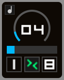 |
Ping-Pong: plays left-to-right from the Start Step for the Length specified and then switches direction and plays from right-to-left for the Length specified. Note that the step at the start end end of the sequencer range will play twice to maintain the total number of steps e.g. 1 2 3 4 4 3 2 1 1 2 3 etc. |
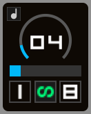 |
Oscillating: plays left-to-right from the Start Step for the Length specified then switches directions and plays from right-to-left. This is similar to Ping-Pong but the difference is that the sequencer direction switches immediately on playing the end or start step of the current range e.g. 1 2 3 4 3 2 1 2 3 4 etc. |
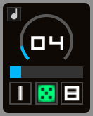 |
Random: chooses the next step randomly in the range defined by the Start Step and Length parameters. |
The horizontal slider controls the swing amount applied to the sequencer. When the slider is fully left, no swing is applied. All the way to the right and maximum swing is applied. The range is 0% to about 65%. Each track has its own swing setting.
💁 Swing, SPECDRUM style!
The way swing is applied is that every even-numbered step of the sequencer has a pre-triggering delay applied to it. That’s a fairly standard approach but the way it works in SPECDRUM, because you can set arbitrary Start and Length parameters for the sequencers, is that it’s the even-numbered steps that get delayed but the even-numbered steps are relative to the Start parameter.
For example, If your sequence starts on step 1 and is 8 steps long, cell 2, 4 and 6 will be delayed. However, if your sequence starts on, say, step 4 and is 4 steps long, cells 5 and 7 will be delayed. It makes more sense if you just try it. Also, Swing works in both forward and reverse directions e.g. if your sequence starts at step 5 and is 4 steps long and is playing backwards, steps 4 and 2 will be delayed. Again, it makes far more sense if you just experiment. Swing is also applied to the Ping-Pong, Oscillating and Random playback modes.
In Ping-Pong Mode swing works pretty much the same as the Forward/Reverse modes but in Random and Oscillating modes it literally just swings every other step that is played regardless of that step’s location in the sequence. It does work though!
The Macro Control Section is where you can perform simultaneous operations on multiple cells and/or multiple Playback Parameters. It’s primarily a convenience feature but also has some great creative uses of its own, especially if you pair SPECDRUM up with a MIDI controller and map some of the controls.
As explained at the start of this document, the Macro Control Section is further split into two distinct parts: Cell Operations and Playback Parameter Operations
The upper half of Cell Operations, labelled CELL SELECT has three buttons that perform selection actions on the sequencer cells.
| ALL | Cycles between selecting all the cells on both tracks, all the cells on Track A and all the cells on Track B. |
| INV | Whatever cells you have selected, this button will invert the selection. |
| NONE | Deselects all cells. |
💁 When a cell is selected, the Cell Select icon will be lit yellow. When as cell is not selected the Cell Select icon will be grey.
The lower half of Cell Operations labelled CELL ACTIONS has three buttons that perform various actions on selected cells.
| PLAY | For any cells that are currently selected this will toggle their Cell Play status |
| CLR | For any currently selected cells, this button will remove their loaded sample |
| HOLD | For any selected cells, this button will toggle their Cell Hold status |
The lower half of the Macro Control is the Playback Parameter Operations section. This section is a little complex so experiment while reading through the explanations and it should make sense.
💁 A Couple of Important Concepts
In order to target a parameter (or parameters) inside a cell, the cell itself must be selected as well as the Playback Parameter Select toggle(s). There is an exception to this when using the Cell Defeat control (see below).
These operations only affect sequencer cells that have their Cell Select button highlighted.
The eight coloured toggle buttons correspond to the Parameter Sliders in the cells. The cross icon to the right of the toggles is just a handy button to clear the parameter selection here: it does not clear anything in the sequencer cells themselves.
Underneath the parameter selection control is the Cell Defeat toggle. This is used to force changes to cell parameters even if the parameters within the cells are not selected. The cells themselves still need to be selected though. This is so you can use the Macro Section to perform mass/multiple Playback Parameter changes in one or more cells without having to manually select the Playback Parameter Select toggles in each cell individually. I know. Read it a few more times, you’ll get there!
SELECT will configure Parameter Select toggle buttons of any currently selected cells to match what is selected in the Macro Control Parameter Selector. For example, if you’ve turned on all of the Parameter Select toggles in the Macro Controls and press SELECT, any cells that are selected will have all of their Parameter Select toggles enabled.
RESET will reset any currently selected sliders in any currently selected cells. This also works in conjunction with Cell Defeat switch. If Cell Defeat is turned on, the reset command will be sent to any currently selected cells and will reset sliders within those cells that match the Macro Control Parameter Selector.
💁 As with the cell control that resets the parameter sliders, clicking RESET here with no parameters selected will reset ALL parameter sliders in any currently selected cells.
The final section of the Macro Controls is the Slider Modification Controls
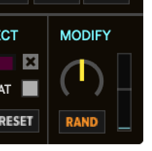
Slider Modification allows you to directly manipulate multiple Parameter Sliders in selected cells. The targeting of cells and sliders is done in the same way as the Parameter Control Operations: one or more cells needs to be selected, either manually or via the Macro Control, and one or more Parameter Sliders need to be selected (or use the Cell Defeat switch to override the local slider selection with the one set in the Macro Controls).
The dial is used to set the amount and type of modification you want to perform. As you turn the dial left or right from the center, you’ll notice that the colour of the dial changes and also the button underneath changes colour and text.
Turn the dial to the left and it will turn yellow, the button text will read MOD. In this mode, targeted sliders will have their range modified by a random amount. The scale of the modification depends on how far left you rotate the dial. The further left, the more extreme the change.
Turn the dial to the right and it will turn orange, the button text will read RAND. In this mode, targeted sliders will receive a random single value. The further right you turn the dial, the larger the scale of the random value from the center.
💁 In order to send the modification to the targeted sliders you have to click the MOD/RAND button.
Finally, on the right is the Macro Parameter Slider. Again, this is used to target selected Parameter Sliders of selected cells. The slider works the same as the Parameter Sliders in the cells. Whatever value or range you set here will be sent immedately to the selected parameters of any selected cells.
The Macro Parameter Slider also observes the Cell Defeat switch.
💁 Unlike the MOD/RAND dial/button control, setting values in the Macro Parameter Slider sends the values immediately to the targetted Parameter Sliders.
The bottom-left corner of the Macro Control section contain three helper buttons.
Very rarely one of the cells might get stuck and the sample won’t stop playing. This can happen when you have looped samples (using the Offest/Direction/Looping slider) in Trigger Mode without setting the AD Envelope (essentially you’ve told SPECDRUM not to turn the sample off).
If you get a stuck cell, click the Panic Button and all currently playing samples will be stopped.
Note: as of V1.10 mouse-over hints are off by default.
This button enables you to turn the mouse-over hints on or off. Not all hints are turned off, this is deliberate. There’s a small delay when turning the hints off as Max has to traverse the entire SPECDRUM device tree for all the hints it needs to turn off.
It’s also a slightly experimental feature as the function isn’t actually provided in Live or Max (so it’s coded in JS inside SPECDRUM).
You can click this to open the current manual in a web browser.
You can skip past to MIDI: Controls and Mapping if you just want to find out what’s mappable and what isn’t. This first bit will tell you why.
MIDI, at the time of release, is functional but a bit sketchy. There
are two reasons for this: firstly the sheer number of SPECDRUM controls
(16 cells x 8 Parameter Sliders and 8 Cell Select buttons plus
Cell Playback controls means over 300 controls to MIDI-map in the
sequencers alone!). Secondly, for aesthetic and sometimes flexibility
reasons, I often chose to use the standard version of common Max objects
over their Max For Live equivalent to build the UI - the major one being
the rslider objects themselves as they don’t even have a
Max For Live equivalent! The downside of these choices is that it
affects how easily and deeply SPECDRUM’s UI is able to be
MIDI-mapped.
Some controls are directly mappable in Live via MIDI Learn. Others require you to place SPECDRUM inside an Audio Effect Rack and then use Live’s rack macro controls. If you’re not familiar with this technique: you first map a Live device control element to a rack macro (right-clicking a control is the simplest way). Once the control is mapped to a rack macro you then use Live’s MIDI Learn to assign an external MIDI control to that rack macro control: MIDI Control -> Macro Control -> Device Control.
This one proved challenging because Max’s rslider
objects require more complicated interaction (via mouse and keyboard) to
set and modify their range. Subsequently there’s no way to assign a
single MIDI control to rslider objects. However, I was
determined to make this control at least somewhat MIDI-mappable because
it’s definitely a key performance feature in SPECDRUM. Here’s what I
came up with.
When you put Live into MIDI Learn mode you will see that two previously hidden mapping targets will reveal themselves above the Macro Parameter Slider (it’s actually two Live Dial objects that are transparent).
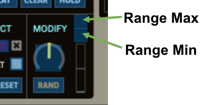
In order to control the Macro Parameter Slider, assign one MIDI control to the upper square (this controls the range maximum value) and another MIDI control to the lower square (this controls the range minimum value). You then will use two MIDI controls to manipulate the range.
Also, at initial release, you need to ensure your MIDI device is able to send MIDI CC messages in relative mode and set the Live mapping to relative when you learn the inputs. The combination of MIDI CC type and Live’s mapping types that work are: Relative Mode (1/127) with 2-bit Relative and also Relative Mode (63/65) with Bin Offset. This is just for this particular control, the others should just work as normal. The mapping will actually work in regular Absolute mode it’s just that you’ll get jumps in the output because the slider values are not fed back to the MIDI controller. Where possible I’ll improve this in future updates.
With mapping somewhat solved, the other aspect I wanted to get right was how you manipulate the Macro Parameter Slider via MIDI controls. I wanted to give you the ability to modify the range max and min values but also to be able to set a single value so that you get the most out of SPECDRUMS’s behaviours. With this in mind, as you move your assigned MIDI control for the range low value, if you raise it so that it meets the high value and then continue, the high and low values will become equal and both will continue increasing, collapsing the range into a single value. This of course works the other way: trying to lower the high value past the low value will collect them together and the high value will be pushing the low value down. If you want to move the entire range just move both MIDI controls simultaneously.
As well as triggering the sequencer cells from SPECDRUM’s sequencers, you can trigger them via MIDI keys. Track A and Track B cells are mapped to MIDI note 48-55 and 60-67 respectively. At the moment this is fixed but I’ll improve it in future updates.
You can run the sequencer and trigger cells via MIDI keys at the same time giving some interesting performance abilities. The MIDI key triggering has a few facets:
Any slot of the currently loaded Preset collection can be recalled via MIDI through note numbers 0-39.
As described in the MIDI: Rationale above, not all controls are able to be directly learned via Live’s MIDI Learn function. The table below lays out the differences in the MIDI-mapping ability of the controls.
| Function | Live MIDI Learn | Live Rack Macro |
|---|---|---|
| Trigger Sample Cell (1) | Track A: MIDI notes 48-55 Track B: MIDI notes 60-67 |
Track A: MIDI notes 48-55 Track B: MIDI notes 60-67 |
| Cell Parameter Sliders | - | - |
| Cell Parameter Select | - | - |
| Cell Play Status | Y | Y |
| Cell Select Status | Y | Y |
| Cell Hold Status | Y | Y |
| Cell Clear Sample | - | - |
| Cell Reset Sliders | - | - |
| Cell Utility HiPass Filter | - | Y |
| Cell Utility LoPass Filter | - | Y |
| Cell Utility Pan | - | Y |
| Cell Utility Gate Mode | - | Y |
| Cell Utility Scale Mode | - | Y |
| Cell Utility Retrigger Mode | - | Y |
| Sequencer: Clock Divider Mode | - | Y |
| Sequencer: Clock Divider | - | Y |
| Sequencer: Swing | - | Y |
| Sequencer: Play Mode | - | Y |
| Sequencer: Start Step | - | Y |
| Sequencer: Length | - | Y |
| Sequencer: Track Volume | - | Y |
| Sequencer: Track Mute | Y | Y |
| Macro Control: Cell Select Functions | Y | Y |
| Macro Control: Cell Action Functions | Y | Y |
| Macro Control: Parameter Select Buttons | Y | Y |
| Macro Control: Parameter Select Select | Y | Y |
| Macro Control: Parameter Select Reset | Y | Y |
| Macro Control: Parameter Cell Defeat | Y | Y |
| Macro Control: Parameter Modify Dial | Y | Y |
| Macro Control: Parameter Modify Send | Y | Y |
| Macro Control: Slider Range Control (2) | Y | Y |
| Recall Preset (3) | MIDI Notes 0-39 = Preset 1-40 | MIDI Notes 0-39 = Preset 1-40 |
(1) MIDI key triggering of the cells is a fixed function and does not need (or is able) to be mapped.
(2) As detailed in MIDI: Rationale MIDI mapping of the Macro Control Parameter Slider requires two MIDI controls to control the minimum and maximum values that define the slider range.
(3) MIDI recalling of Presets is a fixed function and is not able to be mapped.
(Implemented in release V1.10 - was not available for initial V1.0 release)
The Preset section handles storing and recalling of Max For Live Preset ‘snapshots’ as well as loading and saving of preset files. You can store up-to 40 of these snapshots that can be recalled either with the UI or via MIDI (see below). If you close Live or SPECDRUM (or Live crashes etc.) then you’ll lose the snapshots unless you’ve saved them to disc.
💁 The Preset snapshot collection is written to disc as a JSON file. The default file, and the one that SPECDRUM will try to find in your Max paths is named “specdrumStorage.json” though you can save and load other storage files via the Preset UI controls.
To store a snapshot, hold SHIFT and click one of the slots in the 4 x 10 grid. Empty slots are dark, slots that already have data stored in them are bright, the currently loaded slot is brighter still. If you store a snapshot in a cell that already contains data it will be overwritten. There is no undo.
To recall a snapshot just click on the slot you want to recall. If the slot is empty (darkly colored), clicking on it will do nothing.
| To load a Preset collection (JSON file) click this button. A system file dialog will appear to enable you to navigate to the Preset file. | |
|
To save a Preset collection click this button. A system file dialog will appear to enable you to navigate to the folder where you would like to save the file. |
| If you should wish to clear all of the currently stored presets click this button. All preset slots will be empty. |
It is possible to recall any of the currently loaded presets using MIDI. The 40 slots are mapped to MIDI notes 0 through to 39.
I’ve deliberately excluded controls and settings from the Macro Controls though I could exapand the Presets to include these settings in the future. The mouse-over hint status is deliberately not saved either.
💁 Recall Speed
In order to make the recalling as fast as possible, the Preset system employs a technique that only saves/loads parameters that have changed since the last Preset recall The first time you recall a Preset after loading an instance of SPECDRUM, you may experience a small delay. This is normal and any subsequent Preset recalls should be almost instant. Bear in mind that to recall a Preset where all the loaded samples change and there are lots of Cell Slider changes, that’s an awful lot of data to shift around in a short space of time so plan your Presets if you need to rely on instantaneous changes in a live performance. Small, incremental changes will feel more responsive than large dramatic ones.
Added Max For Live Preset section so you can now store up-to 40 presets ‘inside’ SPECDRUM. Please see “Preset System” for full explantion and usage.
Related to Preset section, added ability to recall presets using MIDI note. Please see “Preset System” for details.
Added “panic” button to Macro Section. With the new Preset system, the chances of getting a ‘stuck’ cell (a cell that keeps playing when you switch Presets) has increased in chance. It shouldn’t happen but if it does, the Panic Button will kill all currently playing cells.
Behaviour change: mouse-over hints are now turned OFF by default so you have to manually turn them on if you need them.
Slider Value Overlay: sometimes these could get ‘stuck’ until you move the associated slider. Made some improvements to the slider value hints overlay so it should be much less likely to happen.
Change log relative to unreleased beta version.
Multiple sample loading. Added ability to load multiple samples by selecting multiple cells, select multiple samples and drop onto one of the selected cells. See ‘Loading Samples’ in the manual (updated with this release) for details.
Routed AD envelope to Dual Filter: if you have set values in the AD slider, the envelope shape will be sent to the dual filter so you’ll get a slight filter sweep. If the AD slider is at it’s default position then the filter is unaffected. This works both in the cells and for the Macro Paramter Slider.
Improved loading and saving structure so should be faster and more robust now.
Live & Undo: I’ve made several improvements to the slider handling which means Live’s undo buffer/history won’t be flooded with so many changes when you’re moving sliders in SPECDRUM. The only obvious exception to this is the Self Modulation slider: it generates a lot of parameter change data so use with care if you’re editing other tracks in Live with this enabled as it will destroy your undo history. Best option I’ve found is to just turn SPECDRUM off or stop Live playback while making edits to other tracks (if you’re using SPECDRUM’s Self Modulation feature).
Added scales to Cell Settings. Now you can pick from 20 scales (or none) via the drop-down menu on the Cell Utility View.
Added ability to change multiple Cell Utility settings simultaneously.
Added multiple audio outputs from device. Regular track output is a mix of both tracks (post track fader), output 3/4 is Track A, output 5/6 is Track B.
Rewrote amplitude envelopes entirely in Gen~ mainly to try to eliminate audible clicks when quickly triggering samples with low harmonic content like low frequency sine waves. It’s much improved but because of the rather chaotic nature of SPECDRUM it’s difficult to eliminate entirely without a rewrite of the sample engine (which is likely to happen in future releases!).
Slider value overlay: added a feature that displays a small two-integer, colour-coded overlay next to a slider when you interract with it. When you stop moving the slider the overlay fades out. This is to aid with setting specific values.
Mouse-over Hints. Added a small toggle button at the bottom-left of the UI to toggle mouse-over hints on/off. Not all hints are turned off, this is deliberate.
Severe: Saving a Live preset (or Set) with combinations of Cell Select, Cell Defeat or any Parameter Select button enabled would cause unpredictable results when reloading the preset/set. Note: because of fixes/changes to the saving/loading structure it’s unlikely any saved presets/sets will load properly if saved with the previous version.
Minor: if a sample was looped and AD envelope applied, the probability setting of a cell would have no affect.
Minor: if a sample was looped (upper or lower range), sometimes the loop would play as a one-shot.
Minor: MOD macro control would have no apparent effect when using for the first time
Minor: Start/Loop, Envelope, Retrigger and Self Modulation slider changes only took effect on the second time triggering the cell.
Minor: if sample is looped and playing, turning off the Cell Play control would cause hung notes.
Minor: first time playing a looped sample would pass incorrect start/end points to playback engine causeing incorrect pitch.
Minor: Retriger mode not diminishing volume on repeats.
Minor: A few minor text errors in the UI/hints.
Closed beta release only, not released to public.